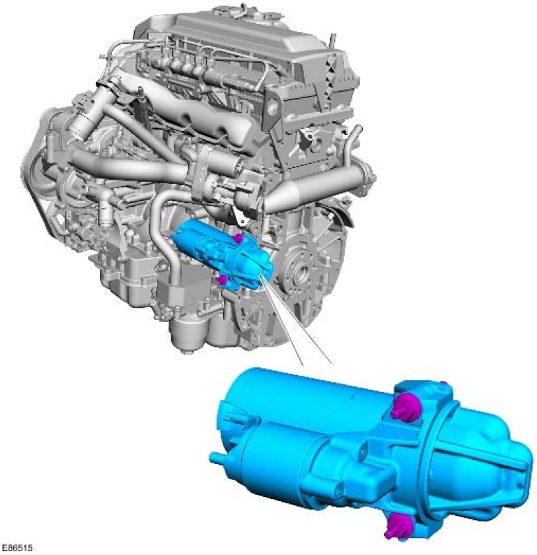
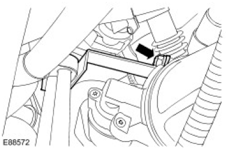
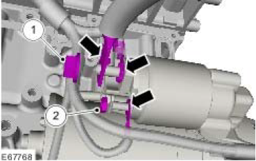
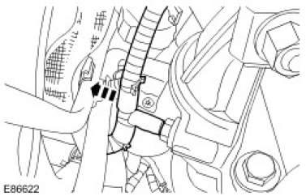
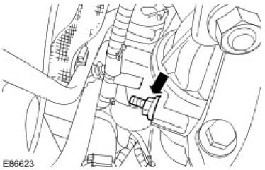
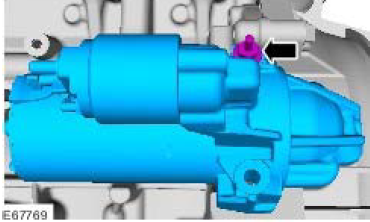

Published: Jan 30, 2007
Specifications
Torque Specifications
| Description | Nm | lb-ft |
|---|---|---|
| Starter motor bolts | 35 | 26 |
| Starter motor battery positive cable nut | 12 | 9 |
| Starter motor solenoid cable nut | 8 | 6 |
| Fuel line support bracket nut | 8 | 6 |
Starting System
COMPONENT LOCATION

OVERVIEW
The starter motor is rated as 2.0 kW and is of conventional design with the motor and drive pinion in line with the solenoid mounted above. It is of the pre-engaged type and comprises a series wound motor, an overrunning clutch and an integral solenoid. This starter incorporates a labyrinth in the front end nose casting to help with water management, sealing and drainage. The solenoid is sealed to stop water ingress and to alleviate cranking failures due to moisture.
The starter solenoid is energised by a signal from the Engine Control Module (ECM) when the ignition switch is moved to the crank position. When engine cranking is requested, the ECM checks that a valid key code has been received before granting the crank request. The power for starter operation is supplied on a substantial single cable connected direct from the battery positive terminal. The cable is connected to the solenoid via a copper threaded stud and secured with a nut.
The starter motor is located on the rear LH side of the engine block and protrudes through a recess to drive the flywheel via a ring gear. The motor is secured to the cylinder block by 2 bolts.
Starting System
Overview
For information on the operation of the system:
Starting System
Inspection and Verification
- Verify the customer concern.
- Visually inspect for obvious signs of mechanical or electrical damage.
| Mechanical | Electrical |
|---|---|
|
|
- If an obvious cause for an observed or reported concern is found, correct the cause (if possible) before proceeding to the next step.
- Use the approved diagnostic system or a scan tool to retrieve any diagnostic trouble codes (DTCs) before moving onto the symptom chart or DTC index.
Make sure that all DTCs are cleared following rectification.
Make sure that all DTCs are cleared following rectification.
Symptom Chart
| Symptom | Possible causes | Action |
|---|---|---|
| The engine does not crank (starter motor does not turn) |
|
Check the battery condition and state of charge. Check for DTCs indicating an immobilizer fault. Check the starter motor relay, ignition switch and generator circuits. Refer to the electrical guides. Check that the engine turns freely. |
| The engine does not crank (starter motor does turn) |
|
Check the starter motor fitment (fasteners tight, starter motor square to engine, etc.). Check the flywheel/drive plate ring gear teeth for damage, foreign objects, etc. |
| Engine cranks too slowly |
|
Check the battery condition and state of charge. Check the starter motor circuits. Refer to the electrical guides. Check the engine oil grade and condition. |
| Engine cranks too fast |
|
Check the engine condition and compressions. |
| Excessive starter motor noise |
|
Check the starter motor fitment (fasteners tight, motor square to engine, etc.). Check the starter motor casing condition. Check the flywheel/drive plate ring gear teeth for damage, foreign objects, etc. |
DTC Index
Electronic Engine Controls
| DTC | Description | Possible causes | Action |
|---|---|---|---|
| P061512 | Starter relay circuit - circuit short to battery |
|
Check the starter relay circuits. Refer to the electrical guides. Rectify as necessary. Clear the DTCs and test for normal operation. |
| P061514 | Starter relay circuit - circuit short to ground or open |
|
|
| P160231 | Immobilizer/engine control module (ECM) communication error - no signal |
|
Check for related DTCs. Rectify as necessary. Clear the DTCs and test for normal operation. Check the alarm (immobilizer) circuits. Refer to the electrical guides. Rectify as necessary. Clear the DTCs and test for normal operation. Refer to the warranty policy and procedures manual if a module is suspect. |
Published: Jan 4, 2007
Starter Motor (86.60.01)
Removal
- Disconnect the battery ground cable.
For additional information, refer to Battery Disconnect and Connect -
 WARNING: Do not work on or under a vehicle supported only by a jack. Always support the
vehicle on safety stands.
WARNING: Do not work on or under a vehicle supported only by a jack. Always support the
vehicle on safety stands.Raise and support the vehicle.
For additional information, refer to Lifting - Remove the fuel line support bracket.
- Remove the nut.

Fuel line support bracket nut (E88572) - Release the starter motor wiring harness clip.
- Release the 2 battery positive cables and the switch lead from the starter motor solenoid.
- Remove the battery positive cable nut.
- Release the starter motor switch lead nut.

Battery positive cables and switch lead (E67768)

- Remove the starter motor lower bolt.
- Remove the starter motor.


Installation
- Install the starter motor.
- Tighten to 35 Nm (26 lb.ft).
Starter motor installation (E67769) - Tighten to 35 Nm (26 lb.ft).
- Secure the 2 battery positive cables and the switch lead to the starter motor solenoid.
- Tighten to 12 Nm (9 lb.ft).
- Tighten to 8 Nm (6 lb.ft).
Battery positive cables and switch lead tightening (E67768) - Secure the starter motor wiring harness clip.
- Install the fuel line support bracket.
- Tighten to 8 Nm (6 lb.ft).
Fuel line support bracket installation (E88572) - Connect the battery ground cable.
For additional information, refer to Battery Connect